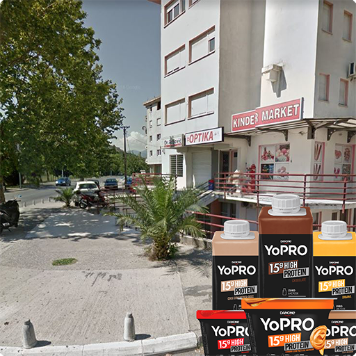

| Glavna stranica | Vijesti | O nama | Shop |
UČENIK GIMNAZIJE ZAVRŠIO KOD PSIHOTERAPEUTA NAKON ŠTO U MARKETU PREKO PUTA ŠKOLE NIJE NAŠAO SVOJE JOGURT PROTEINE |
|||
|  |
F.F. učenik je jedne od brojnih podgoričkih gimnazija. Na prvi pogled on je sasvim normalan dovoljni đak. On međutim, tvrdi da ne bi uspio da postane ono što je sada da nikada nije otkrio za jogurt proteine. Naime, kako F.F. kaže, prije proteina on je bio najobičniji 5.00 luzer.
F.F. bi svakog odmora išao do svog lokalnog dućana gdje je kupovao svoje jogurt proteine pomoću kojih je preživljavao ostatak školskog dana. Međutim, jednog dana, dok je F.F. bio u prodavnici došao je do zaključka da je neko kupio sve njegove jogurt proteine.
U početku počeo je da osjeća otežano disanje, zatim je počeo da ima halucinacije i po prvi put od kad se upisao za gimnaziju postao je aktivan na časovima. U nadi da će mu pomoći, on je pošao kod psihoterapeuta, koji njegovu priču nije shvatao ozbiljno, ostavivši mladog F.F. na cjedilu.
U trenutku pisanja članka, F.F. je uspio da nabavi protein jogurt iz druge radnje i potpuno se oporavi, a njegova priča samo ukazuje na nesposobnost našeg zdravstvenog sistema da pomogne ljudima poput njega, kojih je svakim danom sve više i više....
| ||
| | |||
| | |||
© 2020 by List Gimnazije |
|||